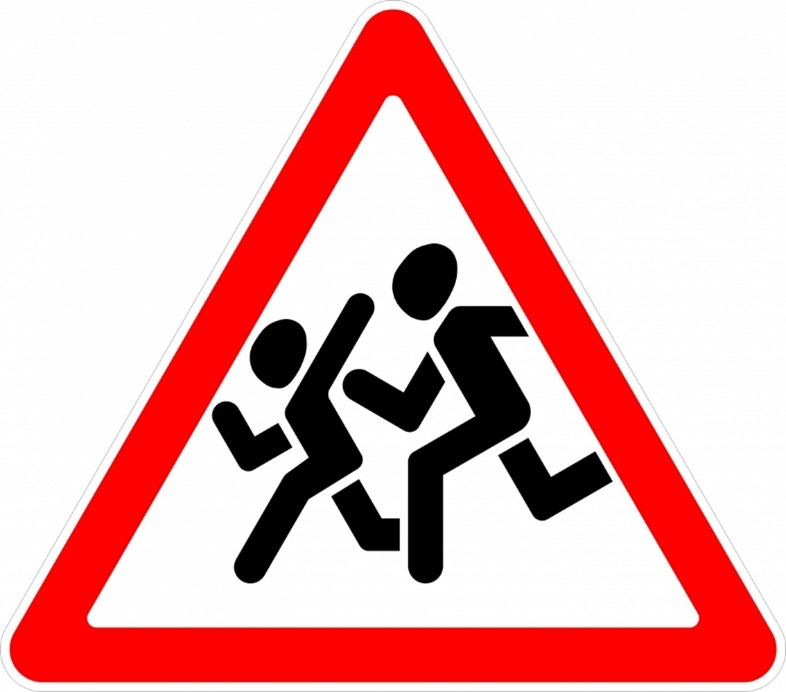
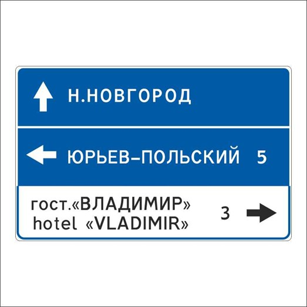
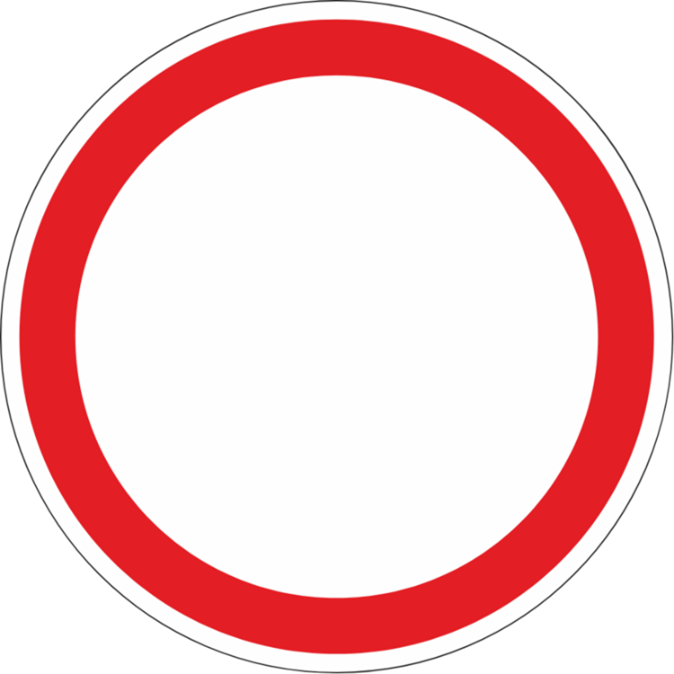
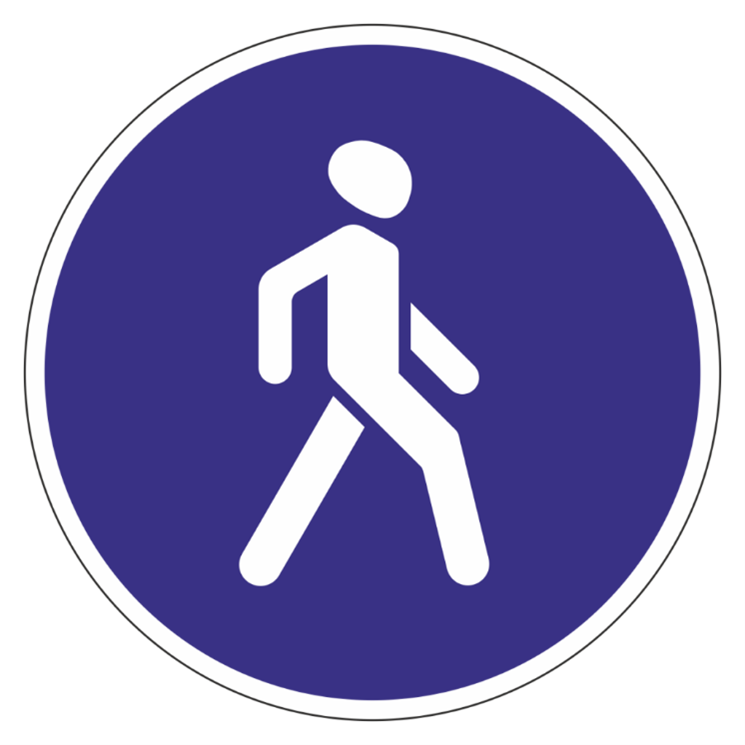

Знаки дорожного движения помогают организовывать и регулировать движение транспорта и людей. Всего существует пять видов знаков дорожного движения – предупреждающие, информационные, запрещающие, предписывающие и служебные таблички.
Предупреждающие знаки информируют водителей о приближении к опасному участку дороги, движение по которому требует принятия мер, соответствующих обстановке. Такие знаки отличаются треугольником красного цвета, но не все они одинаковы на вид.

Рисунок 1 - Внешний вид предупреждающего знака "Осторожно, дети"
Информационные знаки информируют о расположении населенных пунктов и других объектов, а также об установленных или рекомендуемых режимах движения.

Рисунок 2 - Информационный знак "Указатель направлений"
Запрещающие знаки вводят или отменяют определённые ограничения движения. Обычно такие знаки круглые и отличаются обводкой красного цвета (за исключением знака «Проезд запрещён», который весь красного цвета, а центре находится прямоугольник белого цвета).

Рисунок 3 - Запрещающий знак "Проезд запрещён"
Предписывающие знаки предписывают участникам дорожного движения определённые действия. Например, направление поворотов. Такие знаки бывают круглыми и синего цвета.

Рисунок 4 - Предписывающий знак "Пешеходная дорожка"
Знаки дополнительной информации (служебные таблички) уточняют или ограничивают действие знаков, с которыми они применены, либо содержат иную информацию для участников дорожного движения. Обычно такие знаки прямоугольной формы и белого цвета.
Рисунок 5 - Служебная табличка "Расстояние до объекта"